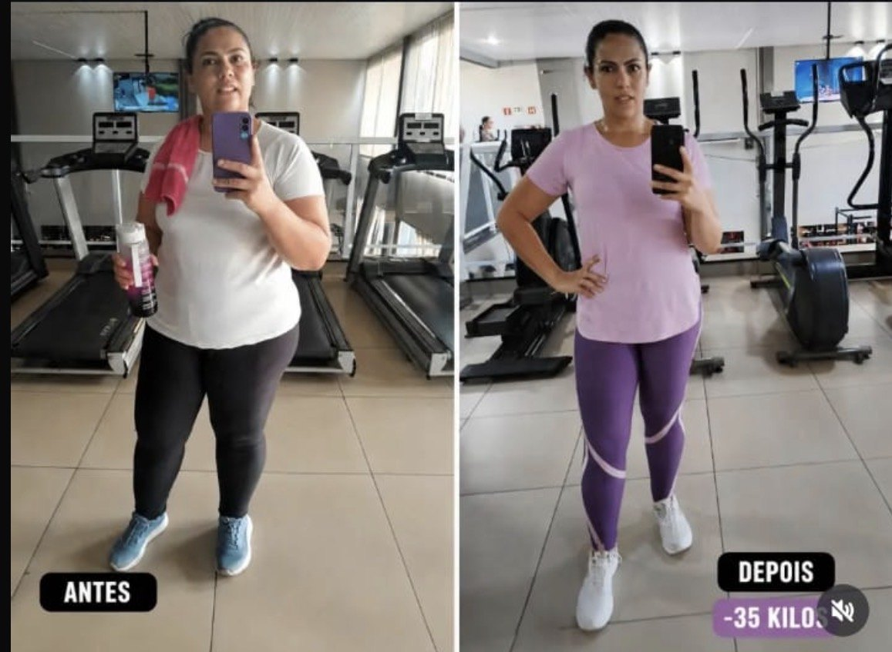
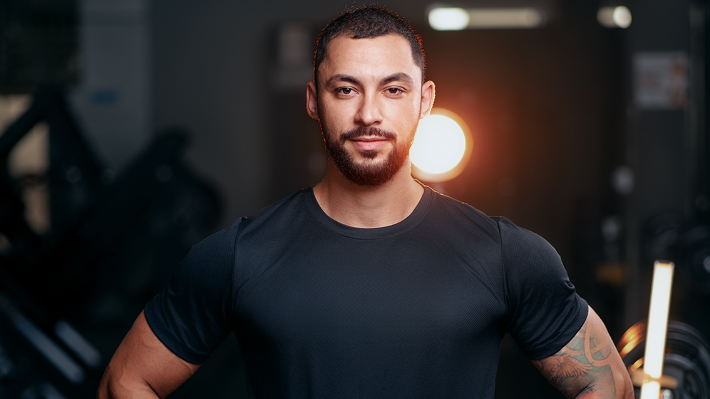
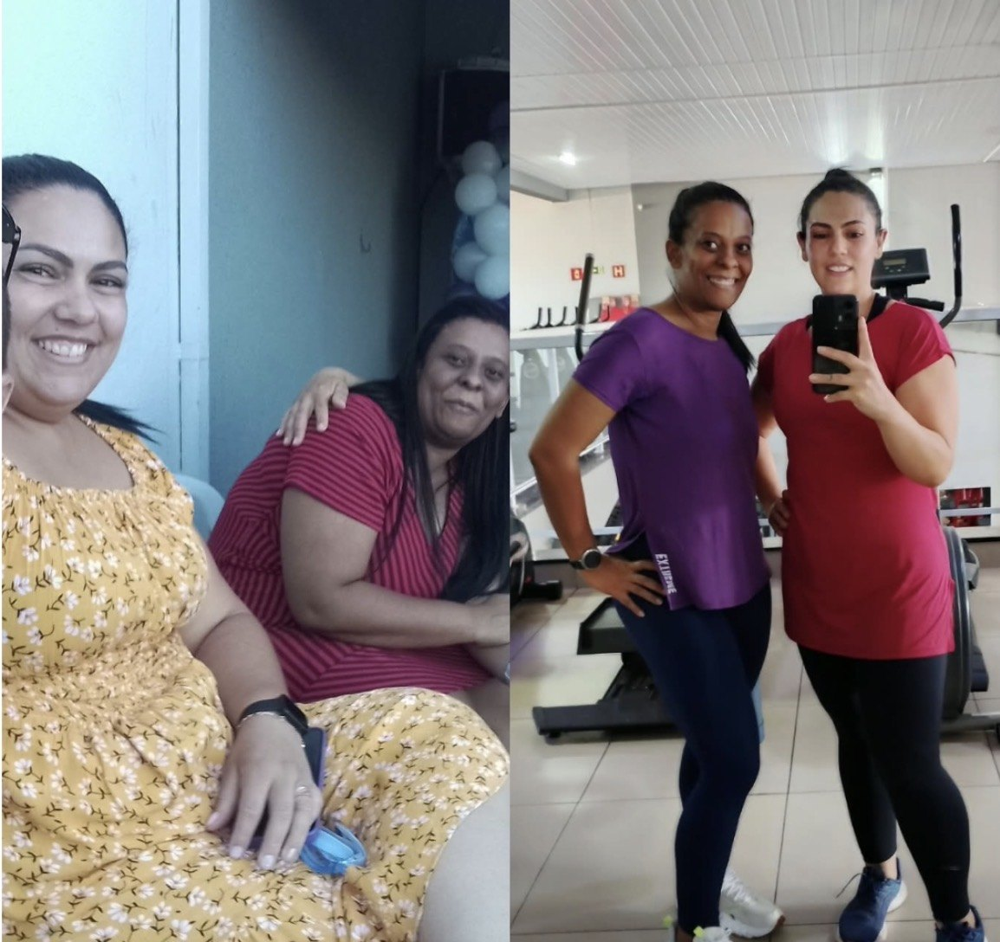
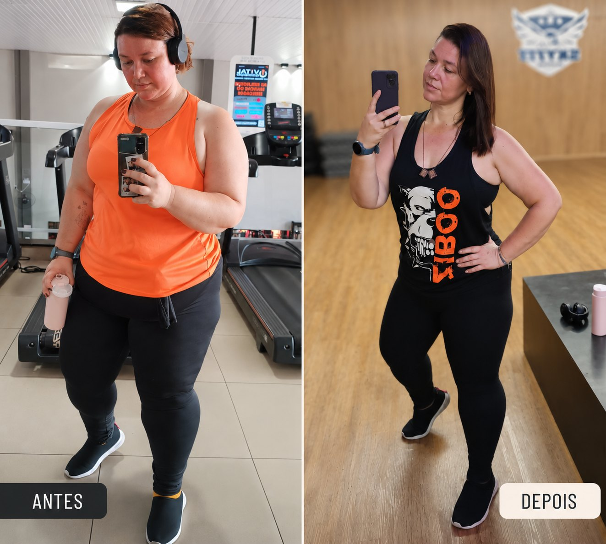
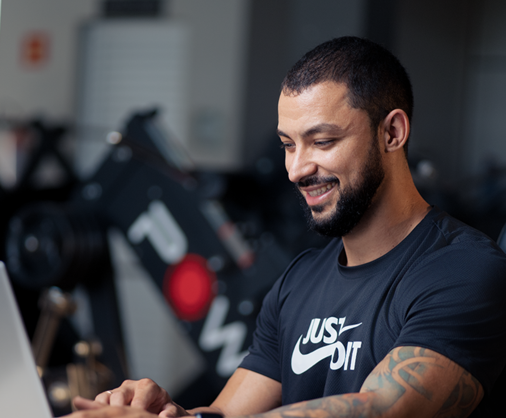

Caso 01
Estratégia construída para a rotina.
Treinamento, alimentação e acompanhamento ajustados ao contexto individual.
Personal Trainer + Nutricionista
Treinamento, nutrição e acompanhamento individualizado para quem quer resultado sem precisar viver para o fitness.

Vida real
Você provavelmente já sabe que precisa treinar e cuidar da alimentação. O difícil é fazer isso funcionar quando existem trabalho, família, compromissos, finais de semana e imprevistos.
É por isso que meu trabalho não começa tentando encaixar você em um protocolo. Começa entendendo a vida em que esse protocolo precisa funcionar.
Resultados reais
A transformação chama atenção. O processo explica como ela foi construída.

Caso 01
Treinamento, alimentação e acompanhamento ajustados ao contexto individual.

Caso 02
Um processo que pudesse continuar mesmo quando a semana não saísse exatamente como o planejado.

Caso 03
A estratégia é individualizada para objetivo, experiência, disponibilidade e resposta ao processo.
Resultados individuais variam conforme contexto, adesão, tempo de acompanhamento e características de cada pessoa.
Não procuro o plano mais difícil que você consegue seguir. Procuro a estratégia mais eficiente que você consegue sustentar. Lucas Moreno
O processo
01 — ENTENDER
Rotina, objetivo, histórico, preferências e dificuldades orientam a estratégia.
02 — PLANEJAR
A estrutura é construída de acordo com o que você precisa e consegue executar.
03 — ACOMPANHAR
Check-ins, progressão e ajustes conforme sua resposta, evolução e rotina.
Consultoria Premium LM
Treinamento, alimentação e acompanhamento são organizados dentro de uma única estratégia individualizada.
Estruturado de acordo com seu objetivo, experiência, disponibilidade e progressão.
Planejamento alimentar considerando objetivo, necessidades, preferências e rotina.
Check-ins para avaliar execução, dificuldades, evolução e aderência ao planejamento.
A estratégia é revisada quando sua resposta ou sua realidade indicarem necessidade.
Tudo em um só lugar
No Portal LM, treino, alimentação, evolução e orientações ficam organizados em um único ambiente.
Mockup real do portal será inserido na etapa visual.
Para quem busca direção
Se você se identificou, podemos entender juntos qual é o melhor próximo passo.
Quero conhecer a consultoria
Lucas Moreno
Estratégia antes de extremismo.
Trabalho com treinamento e nutrição para ajudar pessoas a emagrecer, melhorar a composição corporal e cuidar da saúde de uma maneira compatível com a própria rotina.
Meu papel não é exigir que você viva como atleta. É usar conhecimento técnico para encontrar a melhor estratégia possível dentro da sua realidade.
Além do antes e depois
Na próxima etapa, esta área receberá depoimentos reais autorizados que mostrem adesão, rotina, organização e experiência de acompanhamento.
Depoimento real sobre conseguir manter o processo mesmo com rotina corrida.
Depoimento real sobre alimentação mais sustentável e menos sensação de restrição.
Depoimento real sobre treino organizado, ajustes e acompanhamento próximo.
Dúvidas frequentes
Não. A frequência é definida considerando objetivo, experiência, disponibilidade e estratégia.
Não existe uma regra de proibição geral. O planejamento considera necessidades nutricionais, objetivo, preferências e contexto.
Você recebe sua estratégia individualizada e realiza check-ins periódicos para acompanharmos execução, dificuldades e evolução.
Os detalhes do formato comercial serão apresentados de forma clara antes da contratação, de acordo com a modalidade disponível.
O próximo passo será uma qualificação rápida e, em seguida, uma conversa direta para entender se a Consultoria Premium faz sentido para o seu momento.
Seu próximo passo
Precisa de direção.
Se você quer organizar treinamento e alimentação de uma forma compatível com sua vida, podemos começar por uma conversa.
Quero conhecer a consultoriaA microqualificação de 3 perguntas será conectada na etapa de conversão.